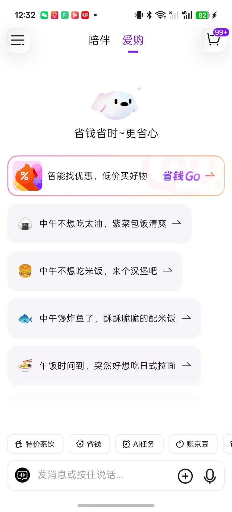
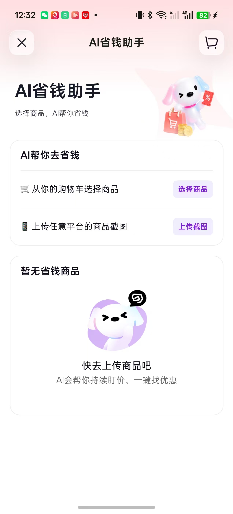
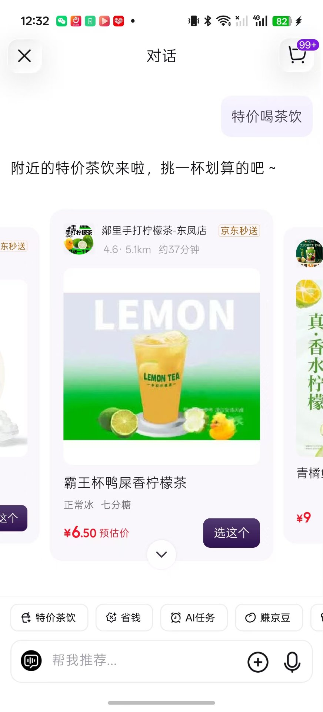
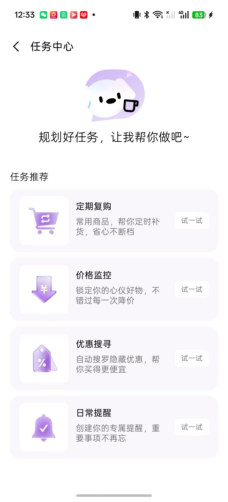
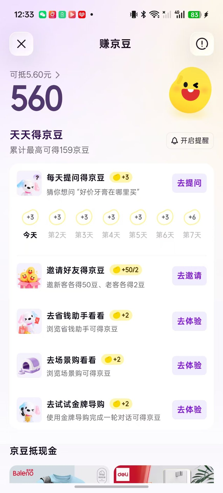
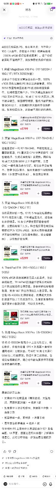

v2 变更：新增 §6 第一手实测（12 张截图，2026-10-12 本人实际操作），两条发现超出公开实测覆盖范围。边界声明：产品事实与公开实测标注来源等级；第一手记录为本人实测，未虚构。来源等级：A官方 / B可核验 / C具名二手 / D自媒体。
| 维度 | 事实 | 来源（等级） |
|---|---|---|
| 上线时间 | 2025-12-26 上线独立 App「京东AI购」，初期内测（邀请码），登陆 App Store | C 百度百科；智东西 2025-12-29 实测 |
| 定位 | 「电商+生活服务」AI 原生入口，对标美团 AI「小美」（2025-09 推出） | C 百度百科；智东西 |
| 技术底座 | 京东自研言犀大模型 | C 百度百科；智东西 |
| 产品结构 | 双一级 Tab：「陪伴」（生活场景管家：打理小家/带娃日记/养宠生活/省钱助手/美妆护肤/运动健身/上班搭子/户外生活/爱车一族）+「爱购」（省钱 Go + 预设话题卡片 + 底部快捷标签：特价茶饮/省钱/AI任务/赚京豆） | B 本人实测（§6 图 1/9）+ C 智东西 |
| 核心功能 | 对话导购、AI 试穿（男女分tab + 6 类场景 + 商品瀑布流）、AI 省钱助手（购物车商品 / 上传任意平台截图 / 持续盯价）、任务系统（定期复购/价格监控/优惠搜寻/日常提醒）、赚京豆（签到/邀请/任务导流/京豆抵现） | B 本人实测（§6 图 2/4/5/6/8） |
| 生态整合 | 打通京东零售、京东外卖、七鲜、京东健康；交易在京东体系内闭环 | C 百度百科 |
| 规模数据 | 截至 2026Q1：京东 App 内「京言」辅助购物用户近 8,000 万（同比 +200%）；AI 导购年活突破 1.5 亿；渗透率超 20% | C 百度百科引京东数据（平台自报，非审计数） |
判断竞品的标准不是「功能像不像」，而是用户在「选笔记本」这个决策时刻还握着哪些替代选项（JTBD：用户雇佣产品来完成的任务；科特勒竞争四层次）。按这个标准分四层：
| 层级 | 竞品 | 为什么算 |
|---|---|---|
| 直接竞品（AI 原生导购） | 京东AI购（本报告主角）、豆包帮你选 / 千问 App、淘宝 AI 购物助手、美团问小团、元宝 / 文心；国际：Amazon Rufus（累计用户超 2.5 亿）、Google AI Mode 一站式购物（UCP 协议）、ChatGPT Instant Checkout（ACP 协议）、Perplexity × PayPal | 同一 JTBD（帮用户选对商品）、AI 原生交互、可下载实测 |
| 最被低估的一层 | 通用大模型本身（ChatGPT / Claude / Gemini / Kimi / DeepSeek / 豆包） | 用户直接把需求丢给通用 AI：「帮我选一台笔记本」。麦肯锡：购物建议已是美国生成式 AI 第二大用途 B |
| 间接竞品（信息源） | ZOL 在线（参数库+榜单）、京东/天猫筛选器、什么值得买 / 慢慢买（比价） | 同一需求、非 AI 形态：解决「查得到」，不解决「看得懂」 |
| 形式竞品（经验层） | 小红书 / 知乎 / B站测评、学长建议、电脑城、品牌官网配置器 | 同一需求的非产品方案；小红书同时是选一本的内容冷启动渠道 |
格局结论（面试可讲）：大厂全部在争「对话框即购物入口」，但全部是横向通用导购 + 绑定自家交易；垂直场景（新生笔记本 × 专业软件负载）+ 中立 + 可解释，仍是空位。
主体证据为澎湃新闻 2026-05 深度实测（与网界网等转载为同一实测，归并为一条证据链）；补充智东西 2025-12 首测与 AI内参 2026-05 三方横评。均为 C 级具名来源。
| 场景 | 实测表现（澎湃，2026-05） | 暴露的问题 |
|---|---|---|
| AI 试穿 | 设计细：可选手动身高/体重/体型+上传照片生成 AI 形象，也支持跨店搭配 | 执行没到位：选梨形身材仍出标准身材效果；还原度低；只能试系统推荐范围内的款；连续换衣发型发色跟着变；男装页推女装 |
| 点外卖 | 一句话可推荐商家并快捷下单；有「定期复购」自动回购 | 推荐品类单一；门店距离普遍超 5 公里（不理解「附近」）；定期复购多次失败 |
| 商品推荐 | 一轮对话给多品牌清单，适合「尝鲜」 | 品牌集中（第一轮多为同品牌）；「爱购」瀑布流与浏览记录强相关 |
| 比价/找优惠 | 实测最强项：同款比价推荐指向明确、价格更低 | 依赖京东站内生态，不做全网比价 |
| 环节 | 分析 | 性质 |
|---|---|---|
| 获客 | 独立 App 冷启动：内测邀请码制造稀缺 + 京东主站导流（8,000 万京言用户池）；侧边菜单可见用户账号体系（jd_dlw39y0hozn6h·东凤镇） | 事实+推断 |
| 激活 | 「爱购」预设话题卡片把「第一句说什么」替用户写好，降低输入门槛——好设计；但对话逻辑仍接近货架电商（对话≈搜索框） | 事实（实测）+推断 |
| 留存 | 双层留存：①「陪伴」tab 用生活场景管家（带娃/养宠/爱车…）占住非购物心智，我的「打理小家」显示陪伴 124 天；②京豆货币化（签到/邀请/任务/抵现，560 京豆 = 5.6 元） | 事实（实测）+推断 |
| 复购 | 任务系统（定期复购/价格监控）锁定日用品消耗场景；公开实测其完成率不稳 | 事实+推断 |
| 变现 | 绑定自家交易闭环（零售/外卖/七鲜/健康）+ 京豆抵现形成站内货币；无 CPS 中立性问题，也无全网比价——生态即天花板 | 事实+推断 |
竞争格局（澎湃 2026-05）：淘宝=千问嵌入主站（2026-05-11 全面打通），京东=独立 App，豆包帮你选=抖音电商闭环，Gemini 也支持对话内购物——大厂全部在争「对话框即入口」。
| 京东暴露的问题（有实测证据） | 对选一本意味着什么 |
|---|---|
| 设计层到位、执行层没跟上（试穿/附近/复购三处，公开实测+我的一手复现） | 选一本的核心是可解释匹配：五维权重用户可调、推荐理由可见——把「能解释」做成对「不能解释」的差异 |
| 预算约束失效：问「4000 元预算跑 PS 的笔记本」，推荐列表 5 款里 3 款 ¥5,799（超预算 43%）——§6 发现 8 | 预算是选购工具的第一性约束，不是偏好标签。选一本的筛选器必须把预算当硬闸门（超预算项默认折叠或明确标注「超预算 X 元」），这条直接来自我对京东AI购的一手测试 |
| 推荐被历史记录绑架（爱购=浏览相关） | 选一本无 CPS、不接厂家买路的中立定位正打这个惯性；「贴链接给真话」要比「猜你喜欢」更敢说 |
| 专业场景匹配准确度低（AI内参横评） | 「新生笔记本 × 专业软件负载」是通用导购不做的微观场景——垂直数据深度就是钉子点 |
| 比价是其实测最强项；AI 省钱助手支持上传任意平台截图 | 选一本的「贴链接避坑会诊」对比价场景，但必须回答「价格/参数数据从哪来、多久更新」——可信度是生死线 |
| 运营打法 | 怎么用到「选一本」上 |
|---|---|
| 留存可以「轻」 | 京东用 9 个场景管家 + 签到 + 京豆把留存做进日常动线。选一本是工具型产品，用户买完机器就走——留存动作是「机型更新 / 价格波动 / 以旧换新节点」提醒，把一次性工具变成决策期伴随 |
| 促活靠「任务」不靠「推送」 | 任务系统的本质是给用户一个回访理由。选一本可设计「比价任务」「配置清单任务」——用户有事做，才会打开 |
| 裂变要双向给甜头 | 邀请好友新客+50/老客+2，双方都有获得感，比单边奖励的转发率高 |
| 复购自动化要先过「确认关」 | 定期复购失败一次就烧信任——加一张确认卡片再生成订单，成本极低，保住的是信任 |
| 转化的前提是「别推买不起的」 | 预算约束失效是共性硬伤（本人 24 场景实测实锤，见质量验证页），预算内优先是转化底线，不是加分项 |
| # | 建议 | 理由（对应实测证据） | 验证指标 |
|---|---|---|---|
| 1 | 试穿生成后加「真实体型校准」三步流程（用户标出 3 个与实物不符的部位并回流） | 实测最大槽点是「选了什么体型都出标准身材」——校准流程把一次生成变成可迭代的人机协同（澎湃实测 + 我的一手复现） | 试穿结果采纳率、相关品类退货率变化 |
| 2 | 外卖推荐接入 LBS 置信度：门店超 5 公里时必须说明原因或主动给近距离替换 | 我实测推荐的「邻里手打柠檬茶」距 5.1km、约 37 分钟——超出日常外卖合理半径，「不理解附近」直接击穿使用场景 | 推荐门店点击率、下单转化率 |
| 3 | 「定期复购」改为「加购后推送待确认卡片」，用户一键确认再生成订单 | 公开实测多次出现不触发/加购错误——自动下单失败一次就烧掉信任；任务中心入口我已实测存在，缺的是确认闭环 | 复购任务完成率、功能留存 |
按「首页结构 → 核心功能 → 增长体系 → 深度场景」顺序走完，全部截图存档。关键发现 8 条，其中 3 条超出公开实测覆盖：
| # | 发现 | 性质 |
|---|---|---|
| 1 | 双 Tab 结构：「陪伴」（9 个生活场景管家）+「爱购」（省钱 Go + 4 个餐食预设话题 + 底部 4 快捷标签）——「陪伴」是公开实测未覆盖的留存层 | 图1/图9 |
| 2 | AI 省钱助手：支持「从购物车选商品」+「上传任意平台的商品截图」+ 持续盯价——跨平台截图比价是真实入口 | 图2 |
| 3 | 外卖推荐带评分/距离/时长/预估价；我实测推荐门店 5.1km、约 37 分钟——一手复现「不理解附近」 | 图3 |
| 4 | 任务系统：定期复购/价格监控/优惠搜寻/日常提醒 + 独立任务中心，结构完整 | 图4/图5 |
| 5 | 京豆增长体系：7 天签到（+3/+3/+6）、邀请好友（新客+50/老客+2）、任务导流（+2×3）、京豆抵现（560 京豆 = 5.6 元）——公开实测未覆盖的完整积分货币化留存设计 | 图6/图7 |
| 6 | AI 试穿：男女 Tab + 6 类场景 + 商品瀑布流，无搜索框、只能逛系统推荐款——一手复现澎湃「只能试推荐范围内的款」 | 图8 |
| 7 | 历史记录按「今天/近半年」组织；我的历史里有一条「笔记本电脑需求」——历史即个性化数据源，也说明我真用过它问选机 | 图10 |
| 8 | 笔记本场景实测：「4000 元预算，能跑 PS 的笔记本」→ 思考链 5 步 → 给出两点专业建议（内存 ≥16G + 高色域屏）→ 但推荐 5 款中 3 款 ¥5,799（超预算 43%）；底部追问出现推荐列表之外的商品名「VisionBook 16Pro」（疑似商品名幻觉，列表内为荣耀 MagicBook X16 Pro） | 图11/图12 |






| 问题 | 答法要点 |
|---|---|
| 为什么选京东AI购 做竞品？ | 直接竞品 + 可下载验证 + 我完整实测过（12 张截图）；我不分析够不到的产品 |
| 它和豆包帮你选、淘宝千问的区别？ | 路径不同：淘宝把 AI 嵌进主站、京东做独立 App、豆包绑抖音闭环；生态决定行为——京东强在 3C 自营物流所以比价强，淘宝强在服装所以试穿强 |
| 数据哪来的，可信吗？ | 三块：澎湃/智东西实测（具名媒体）+ 京东自报规模数（已标明是自报）+ 我本人 2026-10-12 的实测截图；没拿到一手的我不装 |
| 让你改京东AI购，改哪三件事？ | 试穿体型校准、外卖 LBS 置信度、复购确认闭环——每条对应一个实测硬伤，各带验证指标 |
| 你实测中最意外的发现？ | 两个：① 4000 元预算它推 3 款 5799——预算约束失效，这让我更确认选一本要把预算当硬闸门；② 追问里出现列表外的商品名（VisionBook），疑似幻觉——AI 导购的可信度问题比我预期的大 |
| 这对你的「选一本」意味着什么？ | 大厂争通用横向入口；垂直场景（新生笔记本×专业软件负载）+ 中立无 CPS + 可解释推荐 + 预算硬过滤是空位；我不拼流量，拼这一个场景的数据深度 |